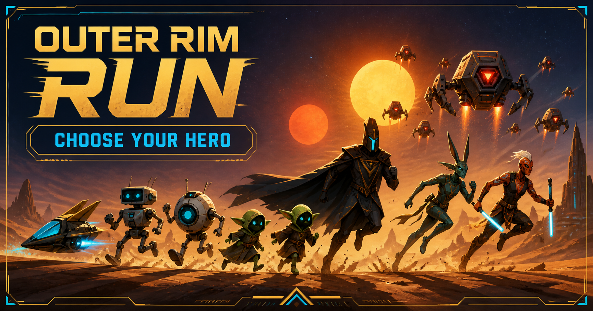
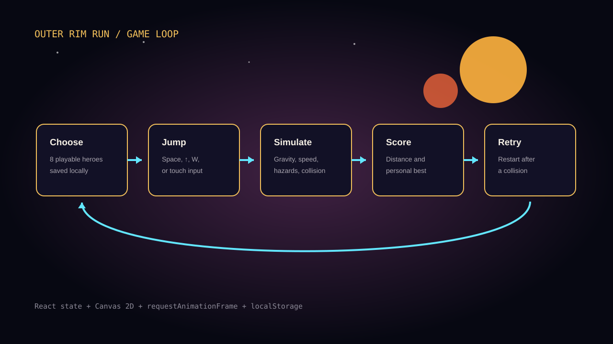

Start playing in seconds
Space, the up arrow, W, or a tap all trigger the same jump action, so the control never becomes the obstacle.
PROJECT 08 CANVAS GAME COMPLETE
A sci-fi endless runner inspired by the simple rhythm of the browser dinosaur game, expanded with a character roster, missions, responsive controls, and a cinematic interface.

I liked how quickly the browser dinosaur game communicates its rules: run, jump, avoid, repeat. I kept that clear core, then built a stronger world around it with a space setting, mission language, score panels, and selectable characters.
Space, the up arrow, W, or a tap all trigger the same jump action, so the control never becomes the obstacle.
Eight characters have their own label, color, symbol, and mission. The selected hero is remembered in local storage.
Run speed increases over time while the next hazard arrives at a less predictable distance.
The canvas redraws the world every frame while React manages the larger states: ready, running, and game over.
The project cover introduces the roster and the orange, gold, and cyan visual system.

Character choice, input, simulation, scoring, collision, and retry form one short loop.
Gravity, jump velocity, hazard movement, and distance use frame time so the game does not depend on one exact display speed.
The player and hazard boxes are slightly forgiving, which keeps near-misses from feeling unfair.
The gradient sky, stars, planets, terrain, heroes, and probe droids are rendered on the canvas instead of loaded as a sprite pack.
The chosen character and personal-best distance live in local storage, so they return after a page refresh.
The jump could be mathematically correct and still feel too heavy or too slow. I had to adjust speed, gravity, spacing, and hit boxes together instead of treating them as separate numbers.
This is an unofficial, non-commercial Star Wars-inspired exercise. Star Wars names and characters belong to Lucasfilm and Disney. A public commercial release would use a fully original setting and roster.
Open repository ↗